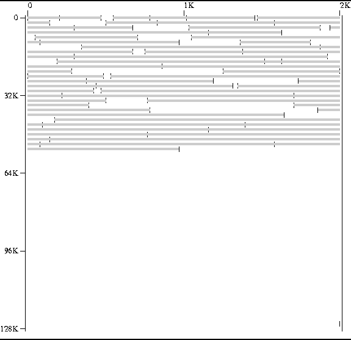
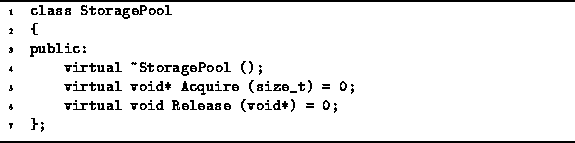

Data Structures and Algorithms
with Object-Oriented Design Patterns in C++
Data Structures and Algorithms
with Object-Oriented Design Patterns in C++
A memory pool is a region of contiguous memory locations
that is subdivided into non-overlapping areas which
are then allocated to the user.
For example, Figure  shows the memory map
of a 128KB pool of memory.
The gray bars denote the blocks of memory that are currently in use;
the blank areas are unreserved and available for use.
shows the memory map
of a 128KB pool of memory.
The gray bars denote the blocks of memory that are currently in use;
the blank areas are unreserved and available for use.

Figure: Memory Map of a Storage Pool
A memory pool supports the following two operations:
Should there be insufficient memory to satisfy the request, the acquire operation fails--the typical implementation throws an exception.
It is an error to attempt to release a region which is not reserved. The behavior of the pool under these circumstances is typically undefined.
Program gives the definition
of the StoragePool abstract class.
This class serves as the base class from which concrete memory pool
implementations are derived.
In addition to the virtual destructor,
two pure virtual member functions,
Acquire and Release, are defined.

Program: StoragePool Class Definition
The Acquire function takes a single argument of type sizet and its return value is a pointer to void. The purpose of this function is to acquire a region of memory locations, the size of which is specified by the argument (in bytes). A pointer to the region is returned. We shall assume that if for any reason the request cannot be satisfied, an exception of type badalloc is thrown.
The Release function takes as its lone argument a pointer to void. This pointer is assumed to be a pointer previously returned by the Acquire function. I.e., it is a pointer to a region of reserved memory locations. The purpose of this function is to return the storage to the memory pool.
 Copyright © 1997 by Bruno R. Preiss, P.Eng. All rights reserved.
Copyright © 1997 by Bruno R. Preiss, P.Eng. All rights reserved.